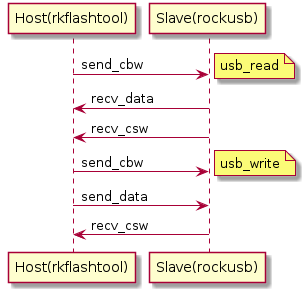

USB¶
 architecture
architecture mass_storage
mass_storageHost设备在sysfs的信息¶
下面的是rk3399中的usb信息
ls /sys/bus/usb/devices/
1-0:1.0 1-1:1.0 3-0:1.0 5-0:1.0 usb1 usb3 usb5
1-1 2-0:1.0 4-0:1.0 6-0:1.0 usb2 usb4 usb6
usb1-usb6表示有6个usb控制器
usb设备命名格式如下
bus-port:config.interface
usbmon 架构¶
usbmon
usbmon ASCII capture¶
编译内核支持usbmon为模块
mount -t debugfs none_debugfs /sys/kernel/debug
mdprobe usbmon
cat /sys/kernel/debug/usbmon/1u > usbmon.mon
./vusb-analyzer usbmon.mon
usbmon binary capture¶
编译内核支持usbmon为模块
modprobe usbmon
ls /dev/usbmon*
/dev/usbmon0 /dev/usbmon1 /dev/usbmon2
tcpdump -i usbmon1 -w usbmon.pcap &
./wireshark usbmon.pcap
Bulk-Only传输协议¶
设备插入到USB后,USB即对设备进行搜索,并要求设备提供相应的描述符.在USBHost得到上述描述符后,即完成了设备的配置,识别出为Bulk-Only的Mass Storage设备,然后即进入Bulk-Only传输方式 在此方式下,USB与设备间的所有数据均通过Bulk-In和Bulk-Out来进行传输,不再通过控制端点传输任何数据
在这种传输方式下,有三种类型的数据在USB和设备之间传送,CBW、CSW和普通数据.
CBW(Command Block Wrapper,即命令块包)是从USB Host发送到设备的命令, 命令格式遵从接口中的bInterfaceSubClass 所指定的命令块,可以是为SCSI或是自定义传输命令集
USB设备需要将SCSI(自定义的)命令从CBW中提取出来,执行相应的命令,完成以后,向Host发出反映当前命令执行状态的CSW(Command Status Wrapper),Host根据CSW来决定是否继续发送下一个CBW或是数据
Host要求USB设备执行的命令可能为发送数据,则此时需要将特定数据传送出去,完毕后发出CSW,以使Host进行下一步的操作
CBW数据结构如下(kernel/include/linux/usb/storage.h)
/* command block wrapper */
struct bulk_cb_wrap {
__le32 Signature; /* Contains 'USBC' */
u32 Tag; /* Unique per command id */
__le32 DataTransferLength; /* Size of the data */
u8 Flags; /* Direction in bit 7 */
u8 Lun; /* LUN (normally 0) */
u8 Length; /* Of the CDB, <= MAX_COMMAND_SIZE */
u8 CDB[16]; /* Command Data Block */
};
CSW数据结构如下
/* command status wrapper */
struct bulk_cs_wrap {
__le32 Signature; /* Should = 'USBS' */
u32 Tag; /* Same as original command */
__le32 Residue; /* Amount not transferred */
u8 Status; /* See below */
};
各字段含义
Signature
固定值: 字符串'USBC'
Tag
主机发送的一个命令块标识，设备需要原样作为dCSWTag（CSW中的一部分）再发送给Host;主要用于关联CSW到对应的CBW
FLags
反映数据传输的方向,0表示来自Host, 1表示发至Host
Lun
对于有多个LUN逻辑单元的设备,用来选择具体目标.如果没有多个LUN,则写0
Length
命令的长度,范围在0~16
CDB
传输的具体命令,符合bInterfaceSubClass中定义的命令规范
Residue
还需要传送的数据,此数据根据dCBWDataTransferLength本次已经传送的数据得到
Status
指示命令的执行状态.如果命令正确执行,bCSWStatus返回0 即可
应用实例1(USB应用编程)¶
基础概念(核心数据结构)¶
CBW(Command Block Wrapper)
CDB(Command Data Block)
CSW(Command Status Wrapper)
每一个CBW都对应有一个CSW,且它们的Tag是相同且唯一的
情景简介¶
本应用实例为一个使用usb来传输数据的烧写工具软件rkflashtool
Host端rkflashtool,使用libusb库进行usb通讯
其中CBW中的CDB自定义为相应的命令,详细见代码
Slave端(开发板),进入下载模式后枚举成MassStroage设备,循环等待接收命令,处理命令
数据通信流程简图¶
读流程(usb_read)
- Host发送cbw,其中cdb里包含读命令,Slave解析后返回相应的数据,Slave返回csw
写流程(usb_write)
- Host发送cbw,其中cdb里包含写命令,并发送要写的数据,Slave返回csw
下图中的所有术语是按主机的角度说明的
work flow
Libusb编程核心步骤
初始化,设置调试级别,使用vid,pid打开设备,连接设备,获取设备通讯接口,获取描述符
libusb_init
libusb_set_debug
libusb_open_device_with_vid_pid
libusb_kernel_driver_active
libusb_claim_interface
libusb_get_device_descriptor
控制传输接口
libusb_control_transfer
bulk传输接口
libusb_bulk_transfer
应用实例2(USB设备驱动编程)¶
需要去掉下面两个配置才能做下面的实验
CONFIG_USB_HID
CONFIG_HID_GENERIC
驱动大致说明如下
使用usb鼠标来模拟一个键盘设备,将鼠标左键定义为按键”L”, 鼠标右键定义为按键”S”,滚轮按键定义为”Enter”
测试方法1
hexdump /dev/input/event3 //这里的event3对应我的鼠标设备
测试方法2
cat /dev/tty1 //按下鼠标左右,和滚轮查看是否有相应字符输出到串口
Firefly_RK3399 USB¶
RK3399支持两个Type-C USB3, DP,两个USB2.0 HOST
Type-C0 USB3支持OTG(USB Peripheral和USB HOST)
Type-C1 USB3仅支持USB3 HOST
在Firefly_RK3399上,两路TypeC物理形态如下
Type-C0 USB3设计为Type-C USB3
Type-C1 USB3设计为Type-A USB3 HOST
RK3399DTS的默认配置支持Type-C0 USB3 OTG,Type-C1 USB3 HOST
Type-C0 USB3 OTG(dr_mode = otg)
usbdrd3_0: usb@fe800000 {
compatible = "rockchip,rk3399-dwc3";
clocks = <&cru SCLK_USB3OTG0_REF>, <&cru SCLK_USB3OTG0_SUSPEND>,
<&cru ACLK_USB3OTG0>, <&cru ACLK_USB3_GRF>;
clock-names = "ref_clk", "suspend_clk",
"bus_clk", "grf_clk";
power-domains = <&power RK3399_PD_USB3>;
resets = <&cru SRST_A_USB3_OTG0>;
reset-names = "usb3-otg";
#address-cells = <2>;
#size-cells = <2>;
ranges;
status = "disabled";
usbdrd_dwc3_0: dwc3@fe800000 {
compatible = "snps,dwc3";
reg = <0x0 0xfe800000 0x0 0x100000>;
interrupts = <GIC_SPI 105 IRQ_TYPE_LEVEL_HIGH 0>;
dr_mode = "otg";
phys = <&u2phy0_otg>, <&tcphy0 1>;
phy-names = "usb2-phy", "usb3-phy";
phy_type = "utmi_wide";
snps,dis_enblslpm_quirk;
snps,dis-u2-freeclk-exists-quirk;
snps,dis-del-phy-power-chg-quirk;
snps,xhci-slow-suspend-quirk;
status = "disabled";
};
};
Type-C1 USB3 HOST(dr_mode = host)
usbdrd3_1: usb@fe900000 {
compatible = "rockchip,rk3399-dwc3";
clocks = <&cru SCLK_USB3OTG1_REF>, <&cru SCLK_USB3OTG1_SUSPEND>,
<&cru ACLK_USB3OTG1>, <&cru ACLK_USB3_GRF>;
clock-names = "ref_clk", "suspend_clk",
"bus_clk", "grf_clk";
power-domains = <&power RK3399_PD_USB3>;
resets = <&cru SRST_A_USB3_OTG1>;
reset-names = "usb3-otg";
#address-cells = <2>;
#size-cells = <2>;
ranges;
status = "disabled";
usbdrd_dwc3_1: dwc3@fe900000 {
compatible = "snps,dwc3";
reg = <0x0 0xfe900000 0x0 0x100000>;
interrupts = <GIC_SPI 110 IRQ_TYPE_LEVEL_HIGH 0>;
dr_mode = "host";
phys = <&u2phy1_otg>, <&tcphy1 1>;
phy-names = "usb2-phy", "usb3-phy";
phy_type = "utmi_wide";
snps,dis_enblslpm_quirk;
snps,dis-u2-freeclk-exists-quirk;
snps,dis-del-phy-power-chg-quirk;
snps,xhci-slow-suspend-quirk;
status = "disabled";
};
};